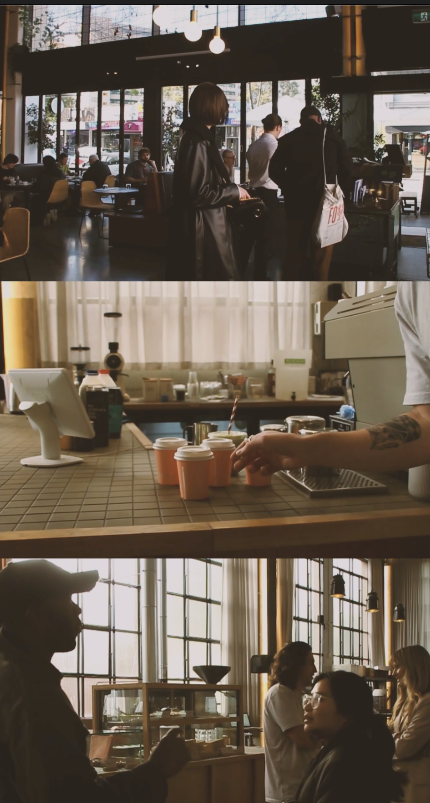

12th Day
Made some aesthetic changes to the cityscape video and added in more footage. Did some footage annotation of the Licnolcn shoot.
13th Day
Finsihed off the lincoln footage organisation. Did the final edit of the June Recap Video. This included colour grading,trimming clips, pacing, picking audio and more.
14th Day
Finishing up the June Recap Video.